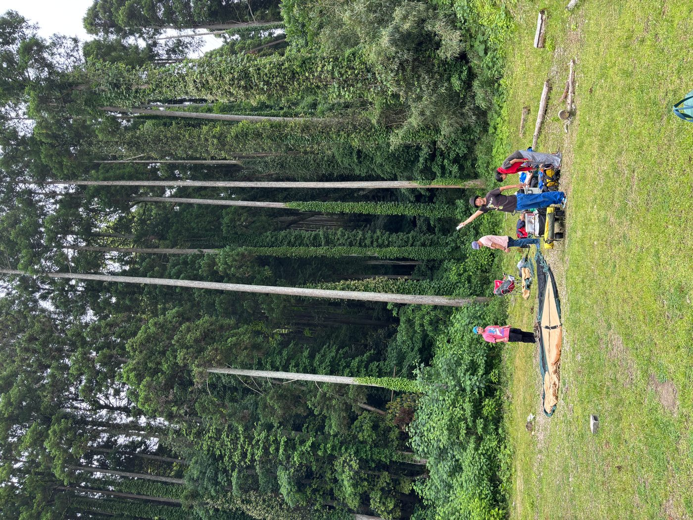

東京は西の町
福生のインストゥルメンタルバンド。
さまざまな風景、記憶を巡り
映画を見ているかのよう。
生み出された音の中で
繭に包まれるのか
羽を広げ飛ぶのか
あなたの自由
An instrumental band from Fussa, a town in Western Tokyo. It's like watching a movie as you travel through various landscapes and memories.
In the sounds they create,
Will you be wrapped in a cocoon or spread your wings and fly?
Famicom BGMの反復性と、初期電子オルガンの音色から出発し、モーダルなハーモニーとポリリズムでBPM110〜130の高揚感を作ります。Guruguru Brain、King Gizzard、Kikagaku Moyoといったバンドと同じ地平で鳴らすことを目指しています。

ステージの照明は極彩色でも、鳴っているのは同じフレーズの微かな変化。ぼやけた光の向こうに、変わらない反復があります。